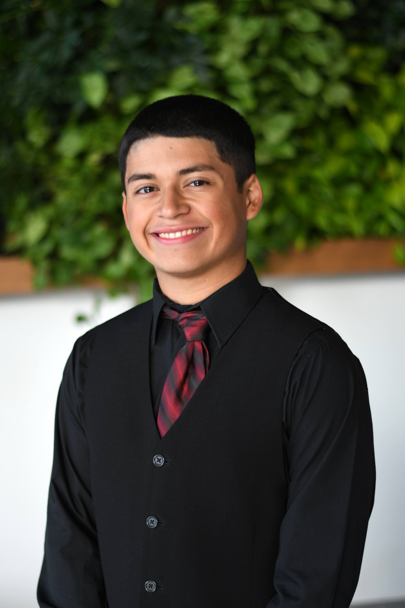
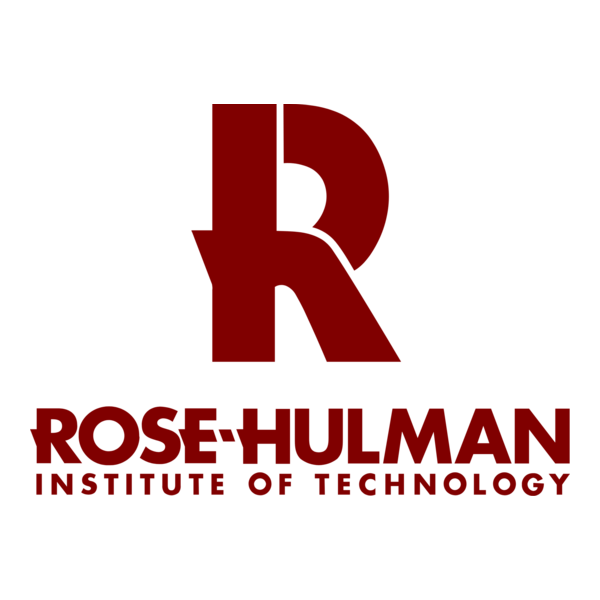
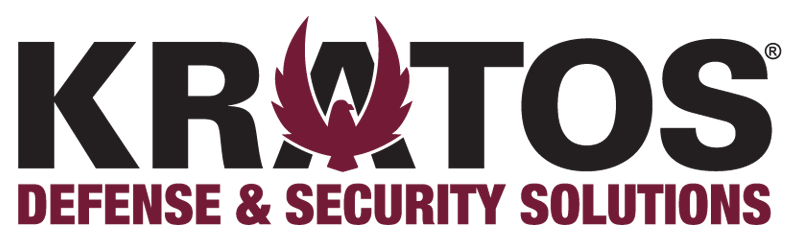
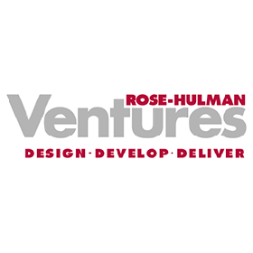
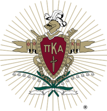
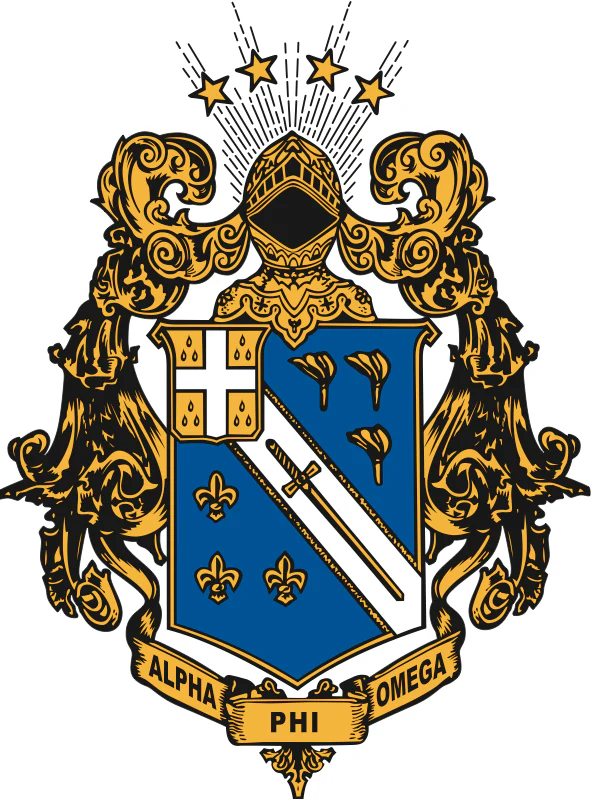

🎓 Studying Software Engineering at Rose-Hulman
On May 30, 2026, I will earn my Bachelor's of Science in Software Engineering from Rose-Hulman Institute of Technology. I thoroughly enjoyed my time at Rose-Hulman. I strived to improve my interpersonal skills by mentoring and tutoring. Moreover, I took the opportunity to organize and participate in community service events on our campus and in the surrounding Terre Haute, IN region.
For the 2026 Spring, I am finishing my studies remotely to join Kratos Defense & Security Solutions as a Software Development Engineer!

🛡️🏥 Real-World Experience
I've interned at Kratos Defense & Security Solutions and Rose-Hulman Ventures. At both organizations, I interned twice, and I'll describe how I contributed each time.
Kratos Defense & Security Solutions
During the summer of 2025, I interned at Kratos in Colorado Springs, CO where I developed middleware for the OpenSpace satellite ground system platform . My work enabled real-time communication between satellite hardware and its management interface. I achieved 100% test coverage across 108 Java tests and introduced rigorous validation practices using Mockito. At the end of the internship, I presented my accomplishments to senior leadership in a 15-minute technical briefing.
During the spring of 2026, I returned to Kratos as an intern. Currently, I've been interning here for a little less than a month, so I'll update this section once the internship is complete! In the meantime, I can share that I am developing code for ground systems that operators use to send commands to satellites (pretty cool right? 😏).
Rose-Hulman Ventures
From February to May of 2025, I worked at Ventures in Terre Haute, IN as a part-time Software Engineer intern while balancing the responsibilities of a full-time Rose-Hulman student. I developed software for a full-stack medical application eRAMx in C# that allowed administrators to virtually certify that patients were following rehabilitation procedures. I joined the team during the migration process from a legacy system, and I began the initiative for unit testing as we migrated to a modern framework.
I returned to Ventures in September 2025 until February 2026 where I was assigned to two different projects: Filter Geek and Glas-Col. I spent most of these six months working on Filter Geek. It was another C# application that visualized the health of a client's air filter systems. For instance, the web application provided information about current air flow and air temperature.


🌟 Campus Involvement
Outside of class, I was a mentor to several young men and held multiple on-campus employment positions; I also like to workout at the gym and play video games (although, I rarely got a chance to 🥲). Regarding mentorship, I support young men in my social fraternity, service fraternity, and the Computer Science Department. My responsibilities as a mentor depended on the organization. I provided more personal advice and shared more time with mentees in my fraternities. For each of my mentees, I focused on their academic habits to ensure they would succeed at Rose.
In addition to my involvement with student organizations, I worked several on-campus positions. I worked as a tutor for AskRose Homework Help and the Learning Center. With AskRose, I assisted students from elementary school through college via phone-based tutoring. At the Learning Center, I specialize in tutoring Rose-Hulman students in computer science and software engineering courses such as Data Structures & Algorithms, Web Programming, and Computer Architecture. In my senior year, I was promoted to Learning Center Supervisor, so I served as a liaison between tutoring staff, student visitors, and the Learning Center administration.
I was also a teaching assistant and grader for the CS department. I provided assistance for the following courses:
- Intro to Computer Systems
- Intro to Web Programming
- Database Systems
My social involvement extends to both a service fraternity and a social fraternity — Alpha Phi Omega and Pi Kappa Alpha, respectively. As Vice President of Service for APO, I coordinated service events for a chapter of approximately 50 members and was honored with the H2 Section's Leader of Service recognition. Within Pi Kappa Alpha, I have mentored three new members during their recruitment process, helping them grow through one of the most transformative periods of their lives.


📞 Contact Information
Feel free to reach out via LinkedIn, email, or phone call/text! You can find my LinkedIn at the bottom of each page, and my email and phone number are listed in my résumé.